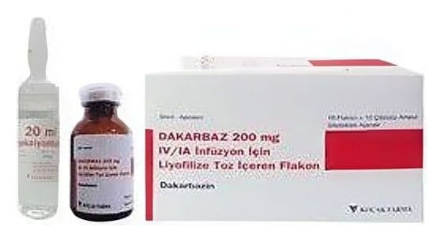

Dakarbaz 200 mg IV/IA İnfüzyonluk Çözelti Hazırlamak İçin Liyofilize Toz Ve Çözücü

Ne için kullanılır
KT · Bölüm 1• DAKARBAZ damar içine uygulanır. İlacınızın bir kutusu içinde 200 mg dakarbazin içeren 10 adet renkli teflon tıpa üzerinde Alu flip-off kapak ile kapatılmış amber renkli 20 ml’lik Tip I cam flakon ve enjeksiyonluk su içeren separatör içerisinde 10 adet 20 ml’lik renksiz Tip I cam otopul çözücü ampul bulunur. Her bir çözücü ampul 20 ml enjeksiyonluk su içerir. Flakon içindeki toz beyaz ya da açık sarı renktedir. Flakon sulandırıldıktan sonra berrak, renksiz, partikül içermeyen çözelti halini almaktadır. • Piyasada DAKARBAZ’ın 100 mg dakarbazin içeren formu da mevcuttur. • DAKARBAZ kanserin ilaçla tedavisinde (kemoterapi) kullanılan alkilleyici ajanlar olarak sınıflandırılan bir ilaç grubuna dahildir. Tek başına veya başka ilaçlarla birlikte kullanıldığında, kanser hücrelerinin çoğalmasını yavaşlatır veya durdurur. • DAKARBAZ malign melanom adı verilen bir deri kanseri türünün tedavisinde tek başına kullanılır. • DAKARBAZ başka ilaçlarla birlikte, Hodgkin lenfoma (lenf dokusunun kanseri), ve erişkin yumuşak doku sarkomlarının ((kas, yağ, lifli doku, kan damarları veya vücudun diğer destekleyici dokularının kanseri)) tedavisinde kullanılır.
• Dakarbazin diğer sitostatik ajanlarla birlikte kullanılabilir.